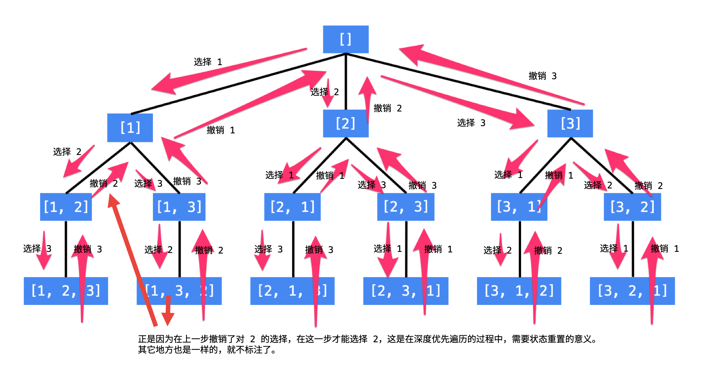

首先介绍“回溯”算法的应用。“回溯”算法也叫“回溯搜索”算法，主要用于在一个庞大的空间里搜索我们所需要的问题的解。我们每天使用的“搜索引擎”就是帮助我们在庞大的互联网上搜索我们需要的信息。“搜索”引擎的“搜索”和“回溯搜索”算法的“搜索”意思是一样的。
“回溯”指的是“状态重置”，可以理解为“回到过去”、“恢复现场”，是在编码的过程中，是为了节约空间而使用的一种技巧。而回溯其实是“深度优先遍历”特有的一种现象。之所以是“深度优先遍历”，是因为我们要解决的问题通常是在一棵树上完成的，在这棵树上搜索需要的答案，一般使用深度优先遍历。
“全排列”就是一个非常经典的“回溯”算法的应用。我们知道，N 个数字的全排列一共有 N! 这么多个。
使用编程的方法得到全排列，就是在这样的一个树形结构中进行编程，具体来说，就是执行一次深度优先遍历，从树的根结点到叶子结点形成的路径就是一个全排列。

说明：
-
每一个结点表示了“全排列”问题求解的不同阶段，这些阶段通过变量的“不同的值”体现；
-
这些变量的不同的值，也称之为“状态”；
-
使用深度优先遍历有“回头”的过程，在“回头”以后，状态变量需要设置成为和先前一样；
-
因此在回到上一层结点的过程中，需要撤销上一次选择，这个操作也称之为“状态重置”；
-
深度优先遍历，可以直接借助系统栈空间，为我们保存所需要的状态变量，在编码中只需要注意遍历到相应的结点的时候，状态变量的值是正确的，具体的做法是：往下走一层的时候，path 变量在尾部追加，而往回走的时候，需要撤销上一次的选择，也是在尾部操作，因此 path 变量是一个栈。
-
深度优先遍历通过“回溯”操作，实现了全局使用一份状态变量的效果。
解决一个回溯问题，实际上就是一个决策树的遍历过程。只需要思考 3 个问题：
-
路径：也就是已经做出的选择。
-
选择列表：也就是你当前可以做的选择。
-
结束条件：也就是到达决策树底层，无法再做选择的条件。
代码方面，回溯算法的框架：
result = []
def backtrack(路径, 选择列表):
if 满足结束条件:
result.add(路径)
return
for 选择 in 选择列表:
做选择
backtrack(路径, 选择列表)
撤销选择其核心就是 for 循环里面的递归，在递归调用之前「做选择」，在递归调用之后「撤销选择」，特别简单。
必须说明的是，不管怎么优化，都符合回溯框架，而且时间复杂度都不可能低于 O(N!)，因为穷举整棵决策树是无法避免的。这也是回溯算法的一个特点，不像动态规划存在重叠子问题可以优化，回溯算法就是纯暴力穷举，复杂度一般都很高。
参考资料
Given a collection of distinct integers, return all possible permutations.
Example:
Input: [1,2,3] Output: [ [1,2,3], [1,3,2], [2,1,3], [2,3,1], [3,1,2], [3,2,1] ]
1
2
3
4
5
6
7
8
9
10
11
12
13
14
15
16
17
18
19
20
21
22
23
24
25
26
27
28
29
30
31
32
33
34
35
36
37
38
39
40
41
42
43
44
45
46
47
48
49
50
51
52
53
54
55
56
57
58
59
60
61
62
63
64
65
66
67
68
69
70
package com.diguage.algorithm.leetcode;
import java.util.ArrayList;
import java.util.LinkedList;
import java.util.List;
import java.util.Objects;
/**
* = 46. Permutations
*
* https://leetcode.com/problems/permutations/[Permutations - LeetCode]
*
* Given a collection of *distinct* integers, return all possible permutations.
*
* .Example:
* [source]
* ----
* Input: [1,2,3]
* Output:
* [
* [1,2,3],
* [1,3,2],
* [2,1,3],
* [2,3,1],
* [3,1,2],
* [3,2,1]
* ]
* ----
*
* @author D瓜哥, https://www.diguage.com/
* @since 2020-01-24 12:35
*/
public class _0046_Permutations {
/**
* Runtime: 5 ms, faster than 8.40% of Java online submissions for Permutations.
*
* Memory Usage: 45.3 MB, less than 5.68% of Java online submissions for Permutations.
*
* Copy from: https://leetcode.com/problems/permutations/discuss/18239/A-general-approach-to-backtracking-questions-in-Java-(Subsets-Permutations-Combination-Sum-Palindrome-Partioning)[A general approach to backtracking questions in Java (Subsets, Permutations, Combination Sum, Palindrome Partioning) - LeetCode Discuss]
*/
public List<List<Integer>> permute(int[] nums) {
List<List<Integer>> result = new LinkedList<>();
backtrack(nums, result, new ArrayList<Integer>());
return result;
}
private void backtrack(int[] nums, List<List<Integer>> result, ArrayList<Integer> path) {
if (path.size() == nums.length) {
result.add(new ArrayList<>(path));
} else {
for (int i = 0; i < nums.length; i++) {
int num = nums[i];
if (path.contains(num)) {
continue;
}
path.add(num);
backtrack(nums, result, path);
path.remove(path.size() - 1);
}
}
}
public static void main(String[] args) {
_0046_Permutations solution = new _0046_Permutations();
int[] n1 = {1, 2, 3};
List<List<Integer>> r1 = solution.permute(n1);
System.out.println(Objects.toString(r1));
}
}